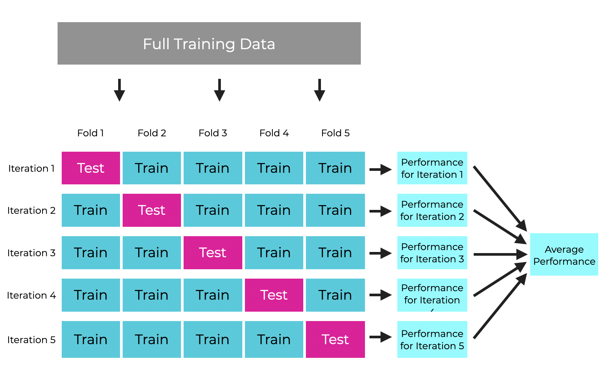

Call:
lm(formula = y ~ x, data = df)
Residuals:
Min 1Q Median 3Q Max
-377.94 -66.26 -4.97 66.86 281.84
Coefficients:
Estimate Std. Error t value Pr(>|t|)
(Intercept) 5.229 6.277 0.833 0.40501
x 0.341 0.111 3.071 0.00219 **
---
Signif. codes: 0 '***' 0.001 '**' 0.01 '*' 0.05 '.' 0.1 ' ' 1
Residual standard error: 100.4 on 998 degrees of freedom
Multiple R-squared: 0.009364, Adjusted R-squared: 0.008372
F-statistic: 9.434 on 1 and 998 DF, p-value: 0.002188Intro to Machine Learning
Thiago Silva
Introductions
Who am I?
- Brazilian
- Not the football player
- Senior Lecturer in Environmental Informatics
- Have been researching the Amazon wetlands for 20+ years.
- Passionate about plant and ecosystem function and technology
What is Machine Learning?
Is ML just statistics?
Is ML just statistics?
What do we use statistics for?
- Exploration
- Confirmation
- Prediction
Is ML just statistics?
What do we use statistics for?
- Exploration
- Confirmation
- Prediction
Confidence vs. Accuracy
Is this a good model?

Machine Learning vs. Statistics
- It’s all about good predictions
- Forget p-values, confidence intervals, model assumptions
- Forget (mostly) about model interpretation
- Forget about the ‘minimal’ model and parsimony - use ALL the data
- The best ML methods don’t care about linearity, normality, collinearity, etc.
- Many good statistical methods (e.g. linear models) are bad ML approaches
Example: Boston Housing Price
'data.frame': 506 obs. of 14 variables:
$ crim : num 0.00632 0.02731 0.02729 0.03237 0.06905 ...
$ zn : num 18 0 0 0 0 0 12.5 12.5 12.5 12.5 ...
$ indus : num 2.31 7.07 7.07 2.18 2.18 2.18 7.87 7.87 7.87 7.87 ...
$ chas : int 0 0 0 0 0 0 0 0 0 0 ...
$ nox : num 0.538 0.469 0.469 0.458 0.458 0.458 0.524 0.524 0.524 0.524 ...
$ rm : num 6.58 6.42 7.18 7 7.15 ...
$ age : num 65.2 78.9 61.1 45.8 54.2 58.7 66.6 96.1 100 85.9 ...
$ dis : num 4.09 4.97 4.97 6.06 6.06 ...
$ rad : int 1 2 2 3 3 3 5 5 5 5 ...
$ tax : num 296 242 242 222 222 222 311 311 311 311 ...
$ ptratio: num 15.3 17.8 17.8 18.7 18.7 18.7 15.2 15.2 15.2 15.2 ...
$ black : num 397 397 393 395 397 ...
$ lstat : num 4.98 9.14 4.03 2.94 5.33 ...
$ medv : num 24 21.6 34.7 33.4 36.2 28.7 22.9 27.1 16.5 18.9 ...Linear Regression vs Random Forests
# A tibble: 2 × 4
model .metric .estimator .estimate
<chr> <chr> <chr> <dbl>
1 OLS rmse standard 6.03
2 RF rmse standard 3.15ML Concepts
Terminology
Terminology
- Training: calculating model parameters from data.
- Tuning: optimizing model hyperparameters for best prediction.
- Validating: evaluation while tuning.
- Testing: final evaluation of the resulting model.
- Outcome: our dependent variable
- Feature: our predictor variables
Terminology
- Classification: any problem/model that outputs categorical data.
- In ML, logistic regression is a *classification** algorithm
- Regression: any problem/model that outputs continuous data
When dealing with images:
Machine Learning resources
What programming language?
R:
- A ‘smaller’, more domain specific language (21,686 pkgs on CRAN).
- You probably already know it.
- Very good for statistical data analysis too.
- Not very good to learn good programming habits and concepts.
- Easier to install, set up and get going.
Python:
- A much ‘bigger’, general purpose language (530,000 pkgs on PIP).
- Not too different from R, but will fill ‘clunky’ at first.
- Will teach you more about good programming habits and concepts.
- The language used by the people developing ML.
- Good for many other uses.
Machine Learning Resources
R:
caret: named from the estimation symbol (\(\hat{}\)), the ‘old school’tidymodels: the ‘tidyverse’ way, actively developed
Python:
scikit-learn: the “holy grail” of MLpytorchandtensorflow: the “big two” for deep learning
Machine Learning Resources
Where to start?
- The
tidymodelswebsite and the ‘Tidy Models with R’ e-book. - The older
Applied Predictive Modelingbook is still better for understanding ML - The Scikit-learn website is excellent for learning about specific algorithms, regardless of programming language.
ML by example
Getting ready
For this session, install the following packages:
tidyverse,tidymodels, modeldata, glmnet, parallel, ranger, vip
I am assuming you are using R version 4.4.2.
Basic regression in tidymodels
The sea urchins dataset explores how three different feeding regimes affect the size of sea urchins over time. We wand to predict suture width from initial_volume (continuous) and food_regime (categoricaL).
library(tidyverse)
library(tidymodels)
urchins <-
read_csv("https://tidymodels.org/start/models/urchins.csv") %>%
setNames(c("food_regime", "initial_volume", "width")) %>%
mutate(food_regime = factor(food_regime, levels = c("Initial", "Low", "High")))
glimpse(urchins)Rows: 72
Columns: 3
$ food_regime <fct> Initial, Initial, Initial, Initial, Initial, Initial, I…
$ initial_volume <dbl> 3.5, 5.0, 8.0, 10.0, 13.0, 13.0, 15.0, 15.0, 16.0, 17.0…
$ width <dbl> 0.010, 0.020, 0.061, 0.051, 0.041, 0.061, 0.041, 0.071,…The traditional way
Call:
lm(formula = width ~ initial_volume * food_regime, data = urchins)
Residuals:
Min 1Q Median 3Q Max
-0.045133 -0.013639 0.001111 0.013226 0.067907
Coefficients:
Estimate Std. Error t value Pr(>|t|)
(Intercept) 0.0331216 0.0096186 3.443 0.001002 **
initial_volume 0.0015546 0.0003978 3.908 0.000222 ***
food_regimeLow 0.0197824 0.0129883 1.523 0.132514
food_regimeHigh 0.0214111 0.0145318 1.473 0.145397
initial_volume:food_regimeLow -0.0012594 0.0005102 -2.469 0.016164 *
initial_volume:food_regimeHigh 0.0005254 0.0007020 0.748 0.456836
---
Signif. codes: 0 '***' 0.001 '**' 0.01 '*' 0.05 '.' 0.1 ' ' 1
Residual standard error: 0.02115 on 66 degrees of freedom
Multiple R-squared: 0.4622, Adjusted R-squared: 0.4215
F-statistic: 11.35 on 5 and 66 DF, p-value: 6.424e-08The ML/Tidymodels way
We most likely want to try different algorithms, so we want a unified interface for trying them. This is given the by
parnsippackage.- For a linear model, we have
linear_reg()
- For a linear model, we have
Different algorithms may have use differen engines (estimation methods/implementations/packages)
- Some available engines for
linear_reg()arelm,glm,gls,lme, etc…
- Some available engines for
Then we want to fit (i.e. train) the model
parsnipgives us thefit()function
# Set up the model type and engine
lin_mod <- linear_reg() %>% set_engine ('glm')
# Fit the model
lin_fit <- lin_mod %>% fit(width ~ initial_volume * food_regime,
data = urchins,
family='gaussian')
# From the broom pkg
tidy(lin_fit) # A tibble: 6 × 5
term estimate std.error statistic p.value
<chr> <dbl> <dbl> <dbl> <dbl>
1 (Intercept) 0.0331 0.00962 3.44 0.00100
2 initial_volume 0.00155 0.000398 3.91 0.000222
3 food_regimeLow 0.0198 0.0130 1.52 0.133
4 food_regimeHigh 0.0214 0.0145 1.47 0.145
5 initial_volume:food_regimeLow -0.00126 0.000510 -2.47 0.0162
6 initial_volume:food_regimeHigh 0.000525 0.000702 0.748 0.457 ML Workflow
The ML workflow involves more steps than the usual statistical analysis:
ML by example: Hotel Bookings
Let’s use hotel bookings data to predict which hotel stays included children and/or babies, based on characteristics such as which hotel the guests stay at, how much they pay, etc.
Reading in the data
hotels <-
read_csv("https://tidymodels.org/start/case-study/hotels.csv") %>%
mutate(across(where(is.character), as.factor))
glimpse(hotels)Rows: 50,000
Columns: 23
$ hotel <fct> City_Hotel, City_Hotel, Resort_Hotel, R…
$ lead_time <dbl> 217, 2, 95, 143, 136, 67, 47, 56, 80, 6…
$ stays_in_weekend_nights <dbl> 1, 0, 2, 2, 1, 2, 0, 0, 0, 2, 1, 0, 1, …
$ stays_in_week_nights <dbl> 3, 1, 5, 6, 4, 2, 2, 3, 4, 2, 2, 1, 2, …
$ adults <dbl> 2, 2, 2, 2, 2, 2, 2, 0, 2, 2, 2, 1, 2, …
$ children <fct> none, none, none, none, none, none, chi…
$ meal <fct> BB, BB, BB, HB, HB, SC, BB, BB, BB, BB,…
$ country <fct> DEU, PRT, GBR, ROU, PRT, GBR, ESP, ESP,…
$ market_segment <fct> Offline_TA/TO, Direct, Online_TA, Onlin…
$ distribution_channel <fct> TA/TO, Direct, TA/TO, TA/TO, Direct, TA…
$ is_repeated_guest <dbl> 0, 0, 0, 0, 0, 0, 0, 0, 0, 0, 0, 0, 0, …
$ previous_cancellations <dbl> 0, 0, 0, 0, 0, 0, 0, 0, 0, 0, 0, 0, 0, …
$ previous_bookings_not_canceled <dbl> 0, 0, 0, 0, 0, 0, 0, 0, 0, 0, 0, 0, 0, …
$ reserved_room_type <fct> A, D, A, A, F, A, C, B, D, A, A, D, A, …
$ assigned_room_type <fct> A, K, A, A, F, A, C, A, D, A, D, D, A, …
$ booking_changes <dbl> 0, 0, 2, 0, 0, 0, 0, 0, 0, 0, 0, 0, 0, …
$ deposit_type <fct> No_Deposit, No_Deposit, No_Deposit, No_…
$ days_in_waiting_list <dbl> 0, 0, 0, 0, 0, 0, 0, 0, 0, 0, 0, 0, 0, …
$ customer_type <fct> Transient-Party, Transient, Transient, …
$ average_daily_rate <dbl> 80.75, 170.00, 8.00, 81.00, 157.60, 49.…
$ required_car_parking_spaces <fct> none, none, none, none, none, none, non…
$ total_of_special_requests <dbl> 1, 3, 2, 1, 4, 1, 1, 1, 1, 1, 0, 1, 0, …
$ arrival_date <date> 2016-09-01, 2017-08-25, 2016-11-19, 20…Data exploration
# A tibble: 1 × 1
n
<int>
1 50000# A tibble: 1 × 1
n
<int>
1 50000# A tibble: 2 × 3
children n prop
<fct> <int> <dbl>
1 children 4038 0.0808
2 none 45962 0.919 Data exploration
Problem - Class imbalance: severe class imbalance can bias model results.
Possible Solutions: upsample or downsample data.
Data splitting
One of the fundamental concepts in ML is that we ALWAYS split our data into training and testing.
- We want the largest possible number of observations to train
- We want enough samples to test with robustness
Usually data splits are between 70/30 to 90/10, with 80/20 being most common
How do we split?
- We want it to be random
- But we may want to account for structures in the data
- Geographical data
- Grouped data
- Imbalanced data
The rsample package from tidymodels deals with sampling
Splitting our data 75/25
set.seed(45)
# Stratified sampling by the children variable to keep proportions
data_split <- initial_split(hotels, prop = 3/4, strata = children)
hotel_train <- training(data_split)
hotel_test <- testing(data_split)
print(c(nrow(hotels),nrow(hotel_train),nrow(hotel_test)))[1] 50000 37500 12500# A tibble: 2 × 3
children n prop
<fct> <int> <dbl>
1 children 2995 0.0799
2 none 34505 0.920 # A tibble: 2 × 3
children n prop
<fct> <int> <dbl>
1 children 1043 0.0834
2 none 11457 0.917 Feature preprocessing and engineering
- Changing variables to fit algorithms (e.g. dummy variables)
- Normalizing (scaling and centering) always recommended
- Transforming variables
- Combining/Splitting Variables
The recipes package lets us organise these as a reusable ‘recipes’. The step_ functions have several common preprocessing steps implemented.
holidays <- c("AllSouls", "AshWednesday", "ChristmasEve", "Easter",
"ChristmasDay", "GoodFriday", "NewYearsDay", "PalmSunday")
lr_recipe <-
recipe(children ~ ., data = hotel_train) %>% # model firmula
step_date(arrival_date) %>% # splits dates into y, m, d
step_holiday(arrival_date, holidays = holidays) %>% # holiday dummy vars
step_rm(arrival_date) %>% # remove variables
step_dummy(all_nominal_predictors()) %>% # encodes chr or fct to dummies
step_zv(all_predictors()) %>% # remove variables with zero variance
step_normalize(all_predictors()) # centers and scalesPicking an algorithm
We have a binary outcome (classification problem), so logistic regression might work?
- Penalised Logistic Regression from
glmnetpackage
Creating a workflow
The workflow package is used to tie in the different modeling steps
Model tuning
Most ML algorithms will have hyperparameters: parameters that are not learned from data, but that will change the outcome of the modelling
Stepwise regression is a crude example of hyperparameter tuning (‘nvar’ would be the hyperparameter)
Since they can be learned, they must be tuned
To tune a hyperparameter we set a range of values/combinations, then validate each combination
Validation sets and strategies
- To validate, we must split our data again!
- Different validation strategies:
- Single validation split
- k-fold or v-fold cross-validation
- Leave-one-out cross-validation (LOOCV)
Cross-validation

##
The tuning grid
- We want to test a range of values for each hyperparameter
- We want to test all possible combinations for multiple hyperparameters
- Numbers can can explode very fast
The dials package of tidymodels will deal with setting tuning parameters
How good is my model?
Tuning (and testing) will always rely on some measure of model performance:how well does the model do? That mainly involes accuracy, but also other apsects such as bias.
There are several accuracy metrics for both classification and regression performance:
Classification accuracy metrics: global accuracy, kappa, recall, precision, sensitivity, specificity, AUC, etc.
Regression metrics: RMSE, R-squared, MAE, etc.
The yardstick package of tidymodels deals with measuring model performance.
Time to crunch some data!
We can now train and tune our model! The tune package handles that.
Did it work?
Checking the tuning results.
# A tibble: 30 × 7
penalty .metric .estimator mean n std_err .config
<dbl> <chr> <chr> <dbl> <int> <dbl> <chr>
1 0.0001 roc_auc binary 0.869 3 0.00678 Preprocessor1_Model01
2 0.000127 roc_auc binary 0.870 3 0.00683 Preprocessor1_Model02
3 0.000161 roc_auc binary 0.870 3 0.00685 Preprocessor1_Model03
4 0.000204 roc_auc binary 0.871 3 0.00686 Preprocessor1_Model04
5 0.000259 roc_auc binary 0.871 3 0.00686 Preprocessor1_Model05
6 0.000329 roc_auc binary 0.872 3 0.00685 Preprocessor1_Model06
7 0.000418 roc_auc binary 0.872 3 0.00683 Preprocessor1_Model07
8 0.000530 roc_auc binary 0.873 3 0.00679 Preprocessor1_Model08
9 0.000672 roc_auc binary 0.873 3 0.00681 Preprocessor1_Model09
10 0.000853 roc_auc binary 0.873 3 0.00686 Preprocessor1_Model10
# ℹ 20 more rowsVisualising tuning results
Important: AUC=0.5 is a completely random prediction.
What would be the best parameters?
# A tibble: 15 × 7
penalty .metric .estimator mean n std_err .config
<dbl> <chr> <chr> <dbl> <int> <dbl> <chr>
1 0.00108 roc_auc binary 0.874 3 0.00698 Preprocessor1_Model11
2 0.00137 roc_auc binary 0.874 3 0.00707 Preprocessor1_Model12
3 0.000853 roc_auc binary 0.873 3 0.00686 Preprocessor1_Model10
4 0.00174 roc_auc binary 0.873 3 0.00708 Preprocessor1_Model13
5 0.000672 roc_auc binary 0.873 3 0.00681 Preprocessor1_Model09
6 0.000530 roc_auc binary 0.873 3 0.00679 Preprocessor1_Model08
7 0.000418 roc_auc binary 0.872 3 0.00683 Preprocessor1_Model07
8 0.00221 roc_auc binary 0.872 3 0.00710 Preprocessor1_Model14
9 0.000329 roc_auc binary 0.872 3 0.00685 Preprocessor1_Model06
10 0.000259 roc_auc binary 0.871 3 0.00686 Preprocessor1_Model05
11 0.000204 roc_auc binary 0.871 3 0.00686 Preprocessor1_Model04
12 0.00281 roc_auc binary 0.871 3 0.00699 Preprocessor1_Model15
13 0.000161 roc_auc binary 0.870 3 0.00685 Preprocessor1_Model03
14 0.000127 roc_auc binary 0.870 3 0.00683 Preprocessor1_Model02
15 0.0001 roc_auc binary 0.869 3 0.00678 Preprocessor1_Model01So which is best?
# A tibble: 1 × 2
penalty .config
<dbl> <chr>
1 0.00108 Preprocessor1_Model11What about a second algorithm?
We often want to test multiple ML algorithms to find the best performing one.
Let us try the famous random Forests algorithm.
Decision Trees
A very simple but powerful classification/regression method
- Take one feature
- Find the feature value that best splits the data into the desired classes
- Repeat for all features
- Pick the best fetaure and split value
- Repeat recursively until all classes are isolated
Decision Trees
But…
Could there be multiple ‘best’ solutions?
Enter the Random Forests algorithm
Why Random?
- For each node, randomly pick a subset of the available features to learn from
- This tree will be a weak learner
This is the mtry hyperparameter
Why Forests?
- What if we create many trees (a forest)
- Due to randomness, each tree will; be different
This is the ntree hyperparameter

And then what?
- Combine the predictions of all weak trees to generate a strong consensus
- This know as an ensemble learning method
- How do we reach the consensus?
- Bagging or Boosting
Bag or boost?
Bagging: a method where you combine the output of all weak learners (a consensus).
Boosting: fit a first weak model, then check what it got wrong. Then assign a stronger weight to these observations, and fit the model again. Repeat until you reach perfect prediction or reach a stopping rule.
Trying Random Forests on our dataset
We should use moar cores
Setting up the model
Creating a recipe
Creating a workflow
Creating a tuning grid
We should normally use much larger grids, this one is for efficiency
Training again
This WILL take some time!
Tuning results
# A tibble: 5 × 8
mtry trees .metric .estimator mean n std_err .config
<dbl> <dbl> <chr> <chr> <dbl> <int> <dbl> <chr>
1 5 5000 roc_auc binary 0.916 3 0.00390 Preprocessor1_Model8
2 5 1000 roc_auc binary 0.916 3 0.00379 Preprocessor1_Model5
3 7 5000 roc_auc binary 0.916 3 0.00332 Preprocessor1_Model9
4 7 1000 roc_auc binary 0.916 3 0.00358 Preprocessor1_Model6
5 7 500 roc_auc binary 0.915 3 0.00338 Preprocessor1_Model3Generate data for the AUC plot
Plot the AUC for both models
Let’s not forget testing!
Validation and tuning gives us the best model for the training data. But we want to make sure our model generalises well and is not biased or overfits. Enter the testing data.
The tune package has a satisfyingly-named function called last_fit() that will re-train the data using the best parameters, and then test it against the test data
# the last model
last_rf_mod <-
rand_forest(mtry = 5, trees = 1000) %>%
set_engine("ranger", num.threads = cores-2, importance = "impurity") %>%
set_mode("classification")
# the last workflow
last_rf_workflow <-
rf_workflow %>%
update_model(last_rf_mod)
# the last fit
set.seed(345)
last_rf_fit <-
last_rf_workflow %>%
last_fit(data_split)
last_rf_fit# Resampling results
# Manual resampling
# A tibble: 1 × 6
splits id .metrics .notes .predictions .workflow
<list> <chr> <list> <list> <list> <list>
1 <split [37500/12500]> train/test sp… <tibble> <tibble> <tibble> <workflow>How good does it do?
We can be ‘kinda’ explanatory
Where to from here?
Where to from here
- Read up on some common algorithms: Random Forests, GBM, XgBoost, Support Vector Machine
- Read up on performance metrics
- Read up on feature engineering
- Read up on Tuning strategies
- Read up on AutoML
- Follow some of the ‘Learn’ lessons on tidymodels.org
- Look at some ML competitions at Kaggle
- Machine learning is a huge field
- Pick an application
- Look at the literature using ML for that application